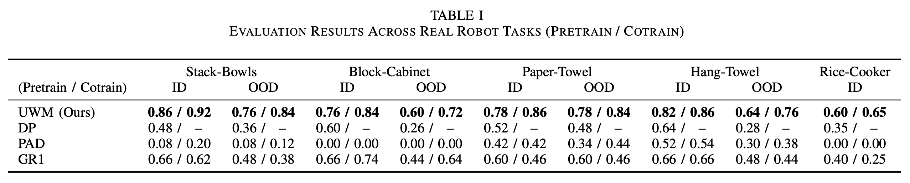
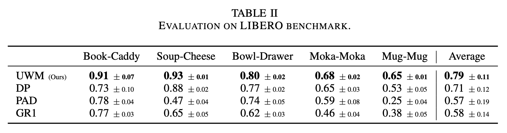

Method
Unified Training on Robot and Video Data
Unified World Models (UWM) combine video and action diffusion in one transformer, with separate timesteps for each modality. UWM can be trained on (o, a, o') triplets from robot trajectories as well as (o, o') tuples from action-free videos, using random noise for masking.
- On robot trajectories: the diffusion timesteps for actions and next observations are sampled independently at random. The model is trained to predict the action and next observation noises conditioned on the noisy inputs and diffusion timesteps.
- On action-free videos: we treat the missing actions as fully noised, manually setting the action diffusion timestep to T. This encourages the model to rely on visual cues and learn robust representations, even in the absence of explicit action labels.
Flexible Inference
UWM can generate samples from conditional and marginal distributions by controlling the modality-specific diffusion timesteps. In particular, UWM represents a policy, a forward dynamics model, an inverse dynamics model, and a video prediction model in a unifed framework.
Experiments
Real-Robot Experiments
To evaluate UWM's ability to learn from large multitask robotic datasets, we pretrain a UWM on a subset of the DROID dataset, and then finetune it to diverse downstream tasks. We find UWM to outperform baseline models in both in-distribution (ID) and out-of-distribution (OOD) settings. We also find cotraining on an in-domain video dataset to further improve performance. Below are rollout videos of UWM on the evaluation tasks.
In-Distribution
Out-of-Distribution


Categorized OOD Experiments
We perform a series of categorized OOD evaluations covering conditions like lighting, backgrounds, and clutter. Below, we show qualitative comparisons between UWM Cotrained, UWM Pretrained, and a standard behavior cloning baseline (DP).
UWM Cotrained
UWM Pretrained
DP
Simulation Experiments
To further evaluate UWM's effectiveness for pretraining, we test it on LIBERO, a robotic manipulation benchmark. The LIBERO benchmark contains 100 robotic manipulation tasks and corresponding datasets, from which we use 90 for pretraining and 5 for evaluation.
Soup-Cheese
Book-Caddy
Bowl-Drawer
Mug-Mug
Moka-Moka

Forward Dynamics
A core capability of UWM is modeling forward dynamics, i.e. predicting how the environment changes given the current observations and actions to take. We visualize the forward dynamics predictions of UWM below. The first row shows static images, and the second row shows synchornized continuous predictions for full trajectories (querying the forward dynamics model after each chunk of actions).
Inverse Dynamics
We evaluate UWM’s inverse dynamics mode on tracking expert trajectories. Specifically, we condition the model on current observations from the environment and expected future observations from an expert trajectory. This should replicate the expert's behavior. We find that, given the same time limit as the expert trajectory, the inverse dynamics model achieves a higher success rate compared to a finetuned policy. Policies tend to drift from the reference trajectory but often recover eventually, explaining why their performance improves with longer horizons (e.g. 1000 steps).

Scalability with Data
To study UWM's ability to scale with pretraining, we train UWM and a behavior cloning baseline (DP) on the task-specific expert demonstrations

BibTeX
@inproceedings{zhu2025uwm,
author = {Zhu, Chuning and Yu, Raymond and Feng, Siyuan and Burchfiel, Benjamin and Shah, Paarth and Gupta, Abhishek},
title = {Unified World Models: Coupling Video and Action Diffusion for Pretraining on Large Robotic Datasets},
booktitle = {Proceedings of Robotics: Science and Systems (RSS)},
year = {2025},
}